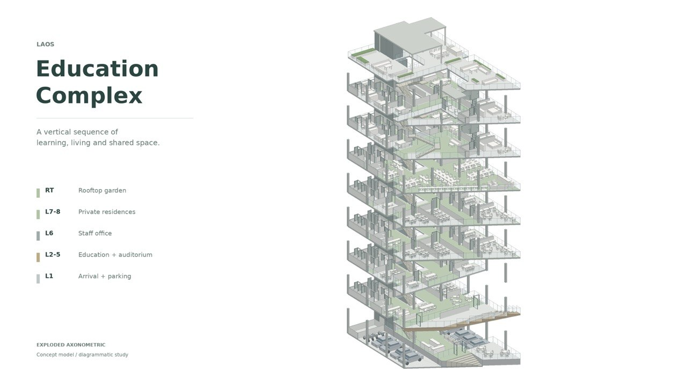

Set on an irregular corner site in Vientiane, this 3,600 sqm educational complex brings learning, work and living together under one roof. Flexible classrooms and shared study spaces gather around a double-height auditorium. Its rising seating pushes out over the entrance as a cantilever, so the building announces itself before you reach the door. Recessed glazed facades draw daylight deep into the centre. Above, staff offices and private homes take the upper floors, with generous gardens and an open rooftop kept for rest and gathering. A busy school below, a quiet retreat above, and each gives the other room to breathe.